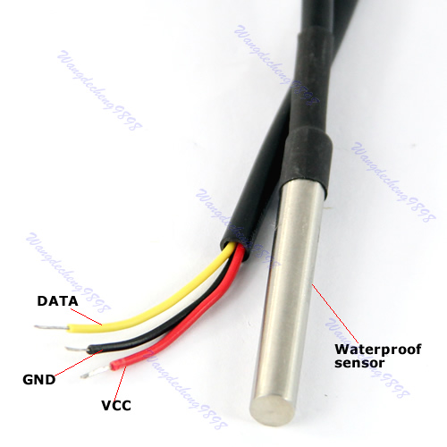
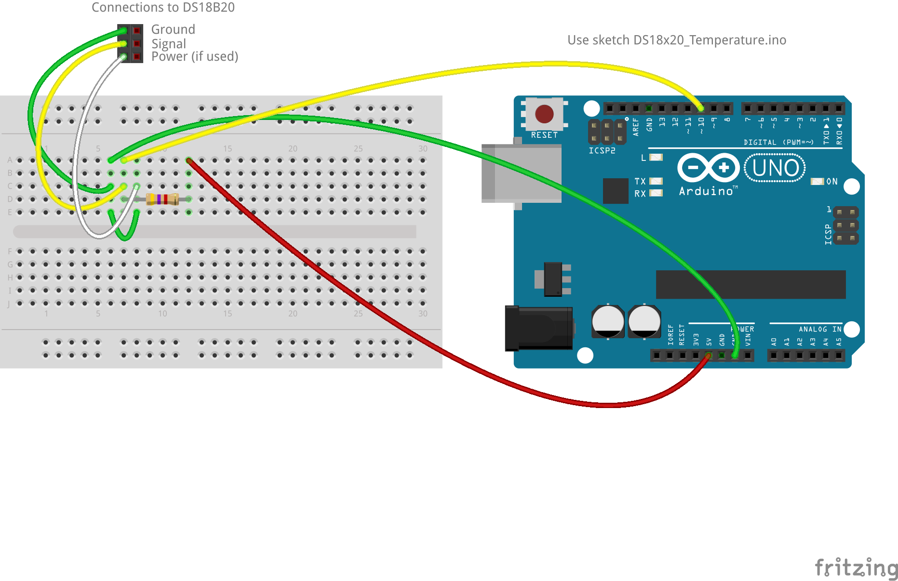
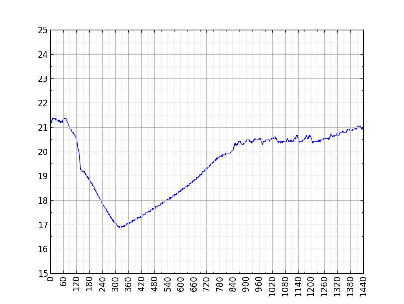

This short note describes how to interface a DS18B20 digital temperature sensor to an Arduino and plot a graph of temperature against time on a laptop running Python. My aim was simply to measure and plot temperatures around the house over a 24 hour period. Since the DS18B20 digital thermometer communicates over a 1-Wire bus that by definition requires only one data line (and ground) for communication with a central microprocessor it was also an opportunity to experiment with this protocol.
The sensor only cost £1.34 (including delivery) from a company advertising on eBay. The data sheet is here.
As you can see from the photo, the sensor can be powered from the data line or can have a separate power supply using the VCC line. I used the former, linking the data line to 5V via a 4.7k resistor.
Luckily there is a 1-wire library available for the Arduino which I downloaded from http://www.pjrc.com/teensy/td_libs_OneWire.html and moved into /usr/share/arduino-1.0.6/libraries (as root) on my Linux Mint laptop, changing permissions to match those of other libraries. The DS18x20_Temperature sketch (from the same web site) worked.
I was also able to determine that, for this DS18B20 sensor, the ROM = 28 2D F 5C 6 0 0 96.
The Arduino sketch that I used (DS18x20_Temperature.ino) is:
#include <OneWire.h>
// OneWire DS18S20, DS18B20, DS1822 Temperature Example
//
// http://www.pjrc.com/teensy/td_libs_OneWire.html
//
// The DallasTemperature library can do all this work for you!
// http://milesburton.com/Dallas_Temperature_Control_Library
OneWire ds(10); // on pin 10 (a 4.7K resistor is necessary)
void setup(void) {
Serial.begin(9600);
}
void loop(void) {
byte i;
byte present = 0;
byte type_s;
byte data[12];
byte addr[8];
float celsius, fahrenheit;
if ( !ds.search(addr)) {
// Serial.println("No more addresses.");
// Serial.println();
ds.reset_search();
delay(250);
return;
}
// Serial.print("ROM =");
// for( i = 0; i < 8; i++) {
// Serial.write(' ');
// Serial.print(addr[i], HEX);
// }
if (OneWire::crc8(addr, 7) != addr[7]) {
Serial.println("CRC is not valid!");
return;
}
// Serial.println();
// the first ROM byte indicates which chip
switch (addr[0]) {
case 0x10:
// Serial.println(" Chip = DS18S20"); // or old DS1820
type_s = 1;
break;
case 0x28:
// Serial.println(" Chip = DS18B20");
type_s = 0;
break;
case 0x22:
// Serial.println(" Chip = DS1822");
type_s = 0;
break;
default:
// Serial.println("Device is not a DS18x20 family device.");
return;
}
ds.reset();
ds.select(addr);
ds.write(0x44, 1); // start conversion, with parasite power on at the end
delay(1000); // maybe 750ms is enough, maybe not
// we might do a ds.depower() here, but the reset will take care of it.
present = ds.reset();
ds.select(addr);
ds.write(0xBE); // Read Scratchpad
// Serial.print(" Data = ");
// Serial.print(present, HEX);
// Serial.print(" ");
for ( i = 0; i < 9; i++) { // we need 9 bytes
data[i] = ds.read();
// Serial.print(data[i], HEX);
// Serial.print(" ");
}
// Serial.print(" CRC=");
// Serial.print(OneWire::crc8(data, 8), HEX);
// Serial.println();
// Convert the data to actual temperature
// because the result is a 16 bit signed integer, it should
// be stored to an "int16_t" type, which is always 16 bits
// even when compiled on a 32 bit processor.
int16_t raw = (data[1] << 8) | data[0];
if (type_s) {
raw = raw << 3; // 9 bit resolution default
if (data[7] == 0x10) {
// "count remain" gives full 12 bit resolution
raw = (raw & 0xFFF0) + 12 - data[6];
}
} else {
byte cfg = (data[4] & 0x60);
// at lower res, the low bits are undefined, so let's zero them
if (cfg == 0x00) raw = raw & ~7; // 9 bit resolution, 93.75 ms
else if (cfg == 0x20) raw = raw & ~3; // 10 bit res, 187.5 ms
else if (cfg == 0x40) raw = raw & ~1; // 11 bit res, 375 ms
//// default is 12 bit resolution, 750 ms conversion time
}
celsius = (float)raw / 16.0;
// fahrenheit = celsius * 1.8 + 32.0;
// Serial.print(" Temperature = ");
Serial.print(celsius);
// Serial.print(" Celsius, ");
// Serial.print(fahrenheit);
// Serial.println(" Fahrenheit");
Serial.print("\n");
}
This sketch interrogates the thermometer once per second and writes the temperature value in celcius to the serial port. Now all we need is something to receive the value and plot it.
Luckily I was able to find some Python source to plot analogue values at http://electronut.in/plotting-real-time-data-from-arduino-using-python/. However, I could not get this code to work for just one variable, so I had to send two values to the plot every second, even though only one was used. The Python code (Display3.py) is shown below.
"""
Display analog data from Arduino using Python (matplotlib)
Successfully modified to display three plots, with a grid, from a single value
"""
import sys, serial
import numpy as np
from collections import deque
import matplotlib.pyplot as plt
import matplotlib.animation as animation
# plot class
class AnalogPlot:
# function run when class is called
def __init__(self, strPort, maxLen):
# open serial port
self.ser = serial.Serial(strPort, 9600)
# create lists to be filled with data
self.ax = deque([0.0]*maxLen)
self.ay = deque([0.0]*maxLen)
self.maxLen = maxLen
# add to buffer
def addToBuf(self, buf, val):
if len(buf) < self.maxLen:
buf.append(val)
else:
buf.pop()
buf.appendleft(val)
# add data
def add(self, data):
self.addToBuf(self.ax, data)
# update plot
def update(self, frameNum, a0, a1): #frameNum is implicit arg
try:
line = self.ser.readline() #reading only one value
data = float(line)
# print data
self.add(data)
a0.set_data(range(self.maxLen), self.ax)
except KeyboardInterrupt:
print('exiting')
return a0,
# clean up
def close(self):
# close serial
self.ser.flush()
self.ser.close()
# main() function
def main():
strPort = '/dev/ttyACM0'
print('reading from serial port %s...' % strPort)
# plot parameters
analogPlot = AnalogPlot(strPort, 600)
print('plotting data...')
# set up animation
fig = plt.figure()
x = plt.axes(xlim=(0, 600), ylim=(15, 25))
x.xaxis.set_major_locator(plt.MultipleLocator(100.0))
x.xaxis.set_minor_locator(plt.MultipleLocator(20.0))
x.yaxis.set_major_locator(plt.MultipleLocator(1.0))
x.yaxis.set_minor_locator(plt.MultipleLocator(0.5))
x.grid(which='major', axis='x', linewidth=0.75, linestyle='-', color='0.75')
x.grid(which='minor', axis='x', linewidth=0.25, linestyle='-', color='0.75')
x.grid(which='major', axis='y', linewidth=0.75, linestyle='-', color='0.75')
x.grid(which='minor', axis='y', linewidth=0.25, linestyle='-', color='0.75')
a0, = x.plot([], [])
a1, = x.plot([], [])
# can only make it work with 2 (or more) args in fargs!
anim = animation.FuncAnimation(fig, analogPlot.update,
fargs=(a0, a1),
interval=1000)
# show plot
plt.show()
# clean up
analogPlot.close()
fig.savefig('/home/david/Desktop/plot.png')
print('exiting.')
# call main
if __name__ == '__main__':
main()
An example of the output from the measurement and plot is shown below as recorded in my study over a 24 hour period in February, starting at aout 10pm.
© David James 2015 Last updated: 10 August 2015